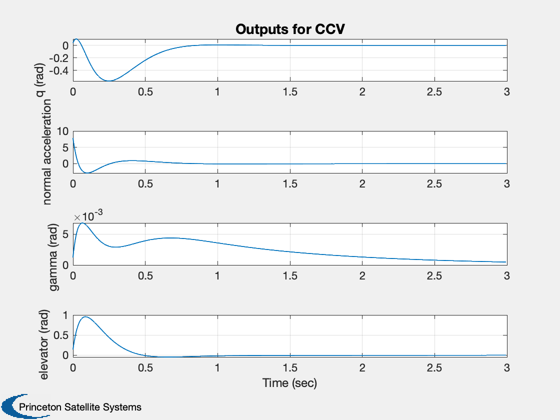
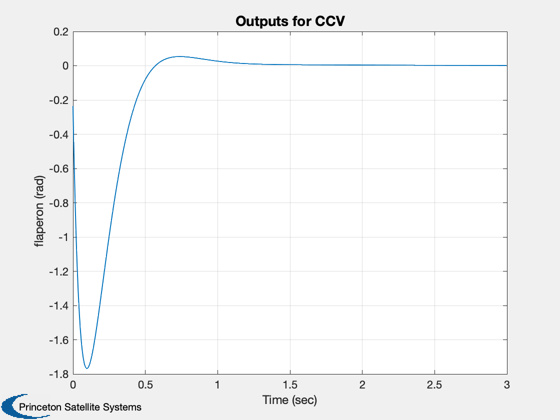
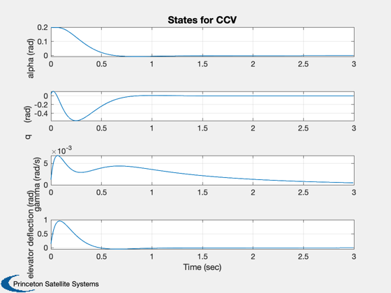
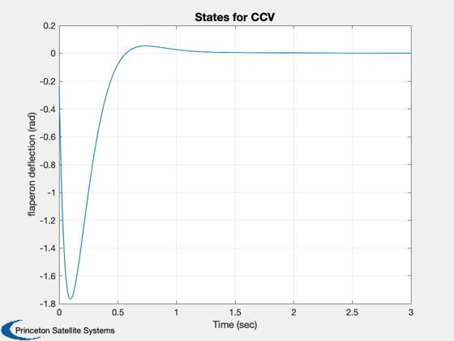
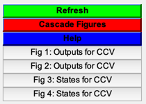

Demonstrate eigenvector assignment using a CCV Model.
A linearized model of the short-period dynamics of an advanced control configured vehicle (CCV-type) fighter aircraft is given.
The example is taken from:
Stevens, B.L., Lewis, F.L. , Aircraft Control and Simulation, John Wiley & Sons, 1992, pp. 354-358.
This demo can stand alone or be used as input to the ControlDesignGUI. To use this with the tool follow these steps:
1. Load the CCV model into the plant. (Click the plant block in the diagram to select it, then click the Load Plant button. Locate and load CCVMode.mat)
2. Run the demo, then enter into Eigenstructure pane:
Desired eigenvalues: lambda Desired eigenvectors: vD Design Matrix: d Rows in d per eigenvalue: rD Weighting vectors: w
3. Push Create.
------------------------------------------------------------------------ See also EVAssgnC, IC, CCVModel ------------------------------------------------------------------------
Contents
%-------------------------------------------------------------------------- % Copyright (c) 1997 Princeton Satellite Systems, Inc. % All rights reserved. %--------------------------------------------------------------------------
Plant matrix
%------------- g = CCVModel; % Uses the state space class j = sqrt(-1);
Desired eigenvalues
%-------------------- lambda = [ -5.6 + j*4.2;... % short period mode -5.6 - j*4.2;... % short period mode -1.0;... % pitch attitude mode, at 1 for stability -19.0;... % elevator actuator mode -19.5]; % flaperon actuator mode
Desired eigenvectors
%---------------------- vD = [ 1-j 1+j 0 1 1;... -1+j -1-j 1 0 0;... 0 0 0 0 0];
We really want to decouple gamma (flight path angle)
In pitch pointing, the control objective is to allow pitch-attitude control while maintaining constant flight-path angle. To achieve this we want to decouple pitch-rate and flight-path angle. Thus an attitude command should be prevented from causing a significant flight path change.
%-------------------------------------------------------------------------- w = [ 1 1 1 1 1;... 1 1 1 1 1;... 100 100 1 1 1];
The design matrix. One column per state
Each row relates vD to the plant matrix. For example, rows 7 and 8 relate column 3 in vD to the plant. In this case vD(1,3) relates to state 2 and vD(2,4) relates to state 3.
%-------------------------------------------------------------------------- d = [eye(3),zeros(3,2);... % Desired structure for eigenvector 1 eye(3),zeros(3,2);... % Desired structure for eigenvector 2 0 1 0 0 0;... % Desired structure for eigenvector 3 0 0 1 0 0;... % 0 0 0 1 0;... % Desired structure for eigenvector 4 0 0 0 0 1]; % Desired structure for eigenvector 5
Rows in d per eigenvalue
Each column is for one eigenvalue. I.e. column one means that the first three rows of d relate to eigenvalue 1.
%--------------------------------------------------------------------------
rD = [3,3,2,1,1];
Compute the gain and the achieved eigenvectors
The function EVAssgnC uses eigenvector assignment to design a controller.
%-------------------------------------------------------------------------- disp(' ') disp('----') disp('Gain') disp('----') [k, v] = EVAssgnC( g, lambda, vD, d, rD, w );
---- Gain ----
Create the closed loop system
The function getabcd gets the statespace matrices. The function eig then creates a vector containing the eigenvalues of the square matrix aCL.
%-------------------------------------------------------------------------- [a, b, c] = getabcd(g) aCL = a - b*k*c; disp(' ') disp('-----------------------') disp('Closed loop eigenvalues') disp('-----------------------') eig(aCL)
a =
-1.341 0.9933 0 -0.1689 -0.2518
43.223 -0.8693 0 -17.251 -1.5766
1.341 0.0067 0 0.1689 0.2518
0 0 0 -20 0
0 0 0 0 -20
b =
0 0
0 0
0 0
20 0
0 20
c =
0 1 0 0 0
47.76 -0.268 0 -4.56 4.45
0 0 1 0 0
0 0 0 1 0
0 0 0 0 1
-----------------------
Closed loop eigenvalues
-----------------------
ans =
-5.6 + 4.2i
-5.6 - 4.2i
-1 + 0i
-19 + 0i
-19.5 + 0i
Simulate
The function IC generates a response to an initial condition vector x. The closed loop system is excited with an initial condition of 0.2 radians in angle of attack.
%-------------------------------------------------------------------------- gCL = set( g, aCL, 'a' ); x = [0.2;0;0;0;0]; IC( gCL, x, 0.005, 600 ); Figui; %-------------------------------------- % $Date$ % $Id: a817dd6460fb3bfbef6907ee60012cd7a59a0a7d $    